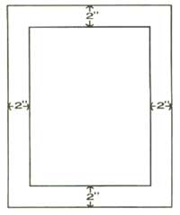

Build and Install a Skylight for Under $10
IN MY TRAVELS IN AND AROUND OUR new home state of New Hampshire, I've noticed a growing number of skylights and sky windows. And why not? There are so many advantages to these skylights that I'm sure everyone would or should want one or two. Aside from the romantic aspects of watching the rain or snow fall at night with the stars glowing, skylights cut down on your use of electricity (in our case, kerosene) and will help heat your home on sunny days.
When I found that most of these molded-plastic. bubble-type openings cost upwards of $200, I promptly swallowed my gum and decided to make one of my own design. Too hard for you? Well, I'm not a very talented person in this department, but with a sunny afternoon and a little research at the dump, these portholes in the roof proved to be quite simple to add to a new or already existing structure. And let's face it, any home improvement that can actually be done by the homeowner is an invaluable source of self esteem, and accomplishing it for almost nothing can only add to that good feeling.
First gather all the materials (most of which can be scrounged for free) and tools necessary for the job. The building process will only take about two hours.
Old window (from a dump or demolition company)
1" x 4" board cut to the length you need (this is determined by adding 2" on all
sides of your window and measuring)
2" x 6" board the appropriate length for a window casing
1" x 2" board to support the window in the casing on all sides
1" x 6" or 1" x 8" board the length of your window
1 quart roofing tar and a suitable paint brush
4 pieces of lath
1 piece of 6 mil clear plastic at least 10 inches larger than window on either side
1 pound each eight- and tenpenny common nails
1 box small staples
Scrap roofing (about 2 yards)
Tools needed:
hammer
saw
square
pencil
When it's time to go to work, be sure to pick a day when you'll have a few hours of sunshine. (These directions are for an already existing building, but if you're building a new home, it's even easier.)
1. Remove all roofing where hole is to be cut.
2. Cut hole in your roof the size of your window. Being on the lazy side, I used a chain saw, but a hand saw will work just as well.
3. Measure and cut 2" x 6" board and frame under edge of hole, making a casing for the window to set in.
4. Measure and cut 1" x 2" boards to fit inside of casing flush with bottom and nail.
5. Set window in place (and smile because it's startin' to take shape)
6. Build a frame from the 1" x 4", two inches larger on all
sides than the hole and nail to roof.
7. Cut 1" x 6" or 1" x 8" to fit inside across middle of frame. Cut so board tapers to four inches at the ends and nail in place.
8. Tar and paper around frame on roof.
9. Cover with plastic and staple in place.
10. Nail lath around outside of frame to help secure plastic.
Now enjoy all the warm sunlight shining in through your roof. In the evening you won't have to light your lamps as early, which will save you what it cost to build this economical, practical skylight.
|
The trickiest port of installing the skylight it to make it completely waterproof. A heavy plastic wrap will do nicely, but make certain that no moisture can sneak between the frame and the roofing. |
 Hardwoods, like ash or oak are preferable for the job. Not only are they durable, but they will resist warping under extreme temperature conditions. |
|